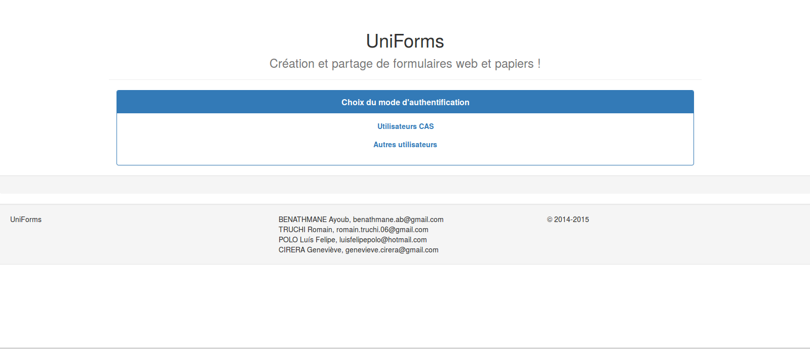

suivant: Utilisateur CAS monter: Fenêtre principale précédent: Fenêtre principale Table des matières
|  figurePage de choix d'authentification |
Pour accéder à la page d'authentification, il suffit de cliquer sur ``Utilisateurs CAS'' ou ``Autres utilisateurs''